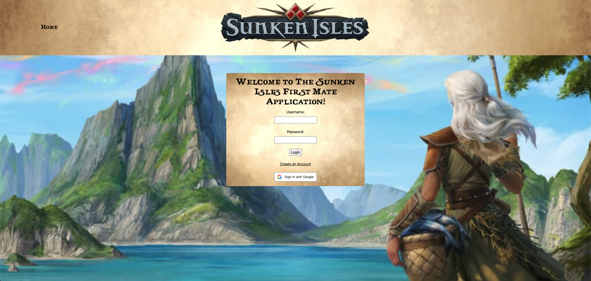
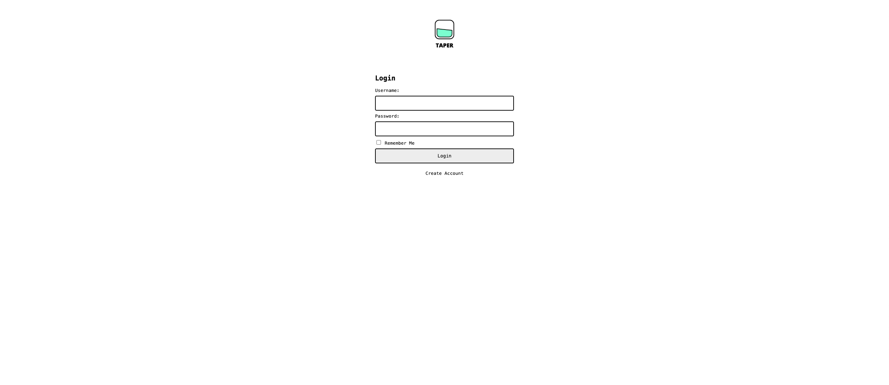
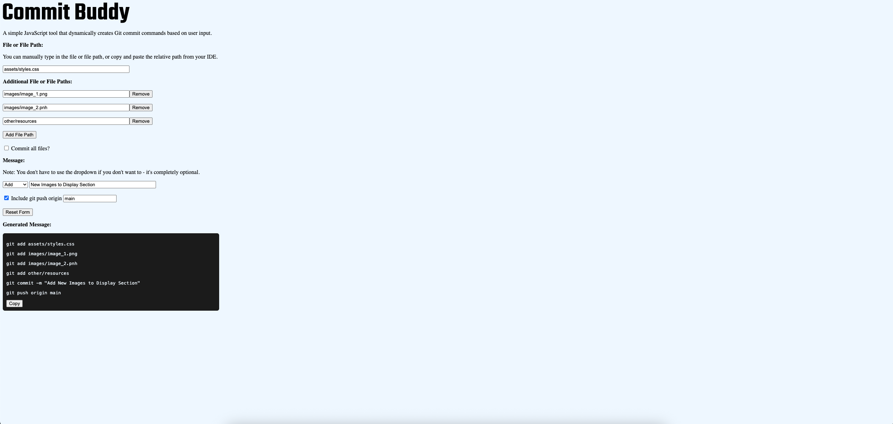

Grant Davis
Sunken Isles First Mate
A responsive web application that supports the Sunken Isles Dungeons & Dragons campaign and allows users to track their campaign progress, villager count, available resources, and owned items.
Habit Heroes Backend
A RESTful Ruby on Rails API designed to be called by the Habit Heroes React frontend application.

Taper
An educational health and wellness web application that allows users to track their alcoholic unit consumption by entering in values for a drink’s ounces and alcohol-by-volume (ABV) percentage.
Commit Buddy
A simple JavaScript tool that dynamically creates Git commit commands based on user input.
